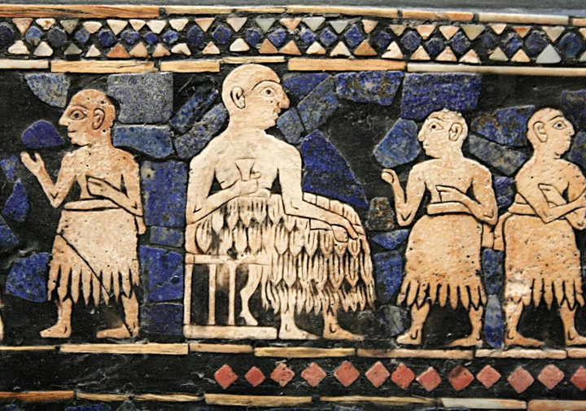
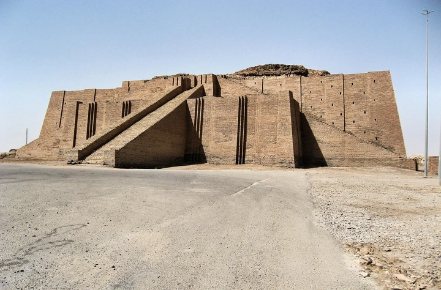
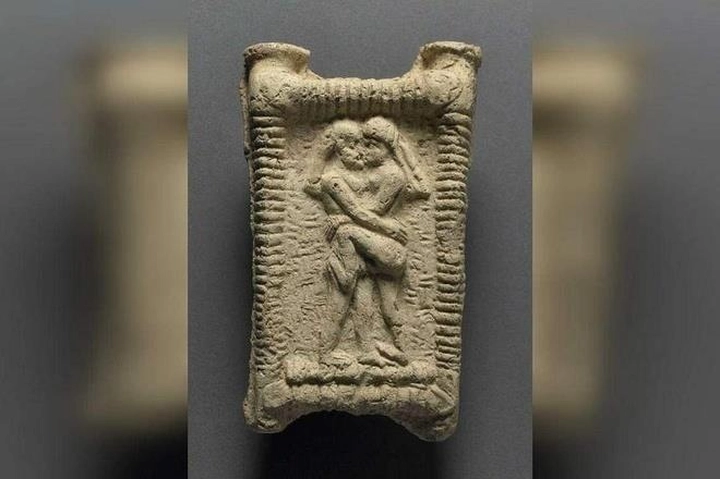

Vai trò và vị thế của phụ nữ trong xã hội mesopotamia
Mesopotamia (Lưỡng Hà - hai dòng sông), vùng đất nằm giữa sông Tigris và Euphrates, được coi là cái nôi của nền văn minh cổ đại. Xã hội nơi đây phát triển các hệ thống chính quyền, tôn giáo, luật pháp và thương mại, đặt nền móng cho văn hóa nhân loại. Trong bối cảnh này, phụ nữ Mesopotamia giữ nhiều vai trò quan trọng, từ gia đình, kinh tế, tôn giáo đến chính trị, mặc dù vị thế của họ bị chi phối bởi luật lệ và tầng lớp xã hội.
Hiểu về vai trò và vị thế của phụ nữ Mesopotamia giúp chúng ta nhận thấy sự đa dạng trong chức năng xã hội, đồng thời nhìn thấy nguồn gốc của các quan niệm về quyền lợi và trách nhiệm phụ nữ trong lịch sử. Bài viết này sẽ phân tích 10 khía cạnh quan trọng về đời sống và vị thế phụ nữ trong xã hội Mesopotamia.
1. Khái quát về xã hội Mesopotamia và vị trí của phụ nữ
Xã hội Mesopotamia được tổ chức theo tầng lớp xã hội phức tạp, bao gồm vua và hoàng tộc, quý tộc, thương nhân giàu có, nông dân, thợ thủ công, và nô lệ. Mỗi tầng lớp xác định quyền hạn, nghĩa vụ và cơ hội tiếp cận tài nguyên của người dân. Trong bối cảnh này, vị trí của phụ nữ không đồng nhất, phụ thuộc vào tầng lớp, mối quan hệ gia đình, và vai trò kinh tế hay tôn giáo mà họ đảm nhận.
Phụ nữ tầng lớp thượng lưu thường có quyền sở hữu tài sản riêng, quyền tham gia vào các quyết định tài chính của gia đình, và đôi khi được giao quản lý đất đai hoặc cửa hàng. Họ còn có cơ hội tham gia vào đời sống tôn giáo và các nghi lễ quan trọng, giúp củng cố địa vị xã hội và gia tăng uy tín cá nhân. Ngược lại, phụ nữ nông dân hoặc nô lệ chủ yếu chịu trách nhiệm lao động sản xuất, chăm sóc gia đình, và hỗ trợ các hoạt động kinh tế cơ bản, nhưng vẫn giữ vai trò trung tâm trong quản lý sinh hoạt gia đình và giáo dục con cái.

Bằng chứng khảo cổ học và văn bản cổ đại, như những tấm bảng chữ hình nêm và thư từ gia đình, cho thấy phụ nữ tham gia tích cực vào hoạt động thương mại, quản lý tài sản và các nghi lễ tôn giáo. Họ có thể điều hành các cửa hàng nhỏ, quản lý kho hàng, hoặc thực hiện các giao dịch kinh tế độc lập. Điều này phản ánh một thực tế rằng, dù bị giới hạn bởi luật lệ và quan niệm nam quyền, phụ nữ Mesopotamia vẫn là trụ cột xã hội, góp phần duy trì dòng họ, truyền đạt văn hóa và tham gia vào đời sống cộng đồng một cách chủ động.
Ngoài ra, trong một số thành phố lớn như Uruk và Babylon, phụ nữ còn xuất hiện trong các vị trí có ảnh hưởng, từ tư tế trong đền thờ cho đến nhà quản lý tài sản, chứng minh họ không chỉ là những thành viên thụ động trong xã hội. Vai trò đa dạng này giúp chúng ta nhận thấy phụ nữ Mesopotamia không chỉ gắn liền với đời sống gia đình mà còn có ảnh hưởng đáng kể trong các lĩnh vực kinh tế, tôn giáo và văn hóa, đóng góp vào sự ổn định và phát triển của nền văn minh cổ đại.
2. Vai trò gia đình và hôn nhân
Gia đình là đơn vị cơ bản của xã hội Mesopotamia, và phụ nữ giữ vai trò trung tâm trong việc quản lý sinh hoạt gia đình, chăm sóc con cái và duy trì dòng họ. Hôn nhân thường được sắp xếp để củng cố quan hệ xã hội và kinh tế giữa các gia đình, thể hiện tầm quan trọng của phụ nữ trong việc bảo vệ danh dự và uy tín gia đình.
Phụ nữ tầng lớp thượng lưu thường có quyền quản lý tài sản gia đình nhỏ, từ đất đai, vật nuôi đến kho thực phẩm, và có khả năng tham gia quyết định kinh tế trong gia đình. Trong khi đó, phụ nữ nông dân chủ yếu lo việc nội trợ, đồng áng và hỗ trợ hoạt động kinh tế chung của gia đình.
Vai trò trong hôn nhân và gia đình còn bao gồm việc giáo dục con cái về văn hóa, tôn giáo và các giá trị xã hội, qua đó truyền lại các chuẩn mực và truyền thống cho thế hệ tiếp theo. Như vậy, phụ nữ không chỉ là thành viên gia đình mà còn là người bảo tồn và phát triển giá trị văn hóa Mesopotamia.
3. Phụ nữ trong kinh tế: lao động và thương mại
Phụ nữ Mesopotamia tham gia vào nhiều hoạt động kinh tế quan trọng, từ nông nghiệp, chăn nuôi, dệt may, thủ công đến buôn bán. Một số phụ nữ, đặc biệt là tầng lớp thượng lưu, quản lý cửa hàng, kho hàng hoặc đầu tư vào sản xuất thủ công, thể hiện khả năng kinh doanh và ảnh hưởng tài chính đáng kể.
Các văn bản cổ đại ghi nhận phụ nữ có thể ký hợp đồng, sở hữu tài sản riêng và tham gia giao dịch thương mại, minh chứng rằng họ không hoàn toàn phụ thuộc vào nam giới trong đời sống kinh tế. Ngay cả phụ nữ nông dân cũng đóng vai trò quan trọng trong sản xuất lương thực và hàng hóa, đảm bảo nguồn cung cho gia đình và cộng đồng.

Hoạt động kinh tế giúp phụ nữ Mesopotamia tăng cường quyền lực và ảnh hưởng xã hội, đồng thời thể hiện sự độc lập trong quản lý tài nguyên. Điều này phản ánh một thực tế rằng phụ nữ đóng vai trò không thể thiếu trong ổn định và phát triển kinh tế xã hội cổ đại.
4. Phụ nữ trong tôn giáo và các nghi lễ
Tôn giáo chiếm vị trí trung tâm trong đời sống Mesopotamia, và phụ nữ thường là người thực hiện các nghi lễ, lễ hội và cúng tế. Một số phụ nữ trở thành nữ tư tế, nắm giữ quyền lực tinh thần và hướng dẫn cộng đồng thực hiện các nghi lễ tôn giáo quan trọng.
Vai trò tôn giáo còn giúp phụ nữ tăng cường uy tín xã hội và tham gia quản lý tài sản của đền thờ. Các nữ tư tế cũng tham gia vào việc truyền dạy kiến thức tôn giáo, bảo tồn văn hóa và định hình niềm tin cộng đồng, qua đó khẳng định ảnh hưởng lâu dài của họ.
Hoạt động tôn giáo cho thấy phụ nữ Mesopotamia không chỉ gắn bó với gia đình mà còn là nhân tố quan trọng trong đời sống cộng đồng, đồng thời giúp xã hội duy trì trật tự và truyền thống qua các thế hệ.
5. Giáo dục và kiến thức của phụ nữ Mesopotamia
Phụ nữ Mesopotamia, đặc biệt là tầng lớp thượng lưu, được tiếp cận giáo dục cơ bản và kỹ năng quản lý gia đình, tài sản. Một số phụ nữ học chữ, quản lý sổ sách và nắm vững kiến thức về kinh doanh, luật pháp và nghi lễ tôn giáo, giúp họ tham gia tích cực vào các hoạt động xã hội.
Giáo dục không chỉ là công cụ quyền lực mà còn giúp phụ nữ tăng cường ảnh hưởng trong kinh tế, tôn giáo và đời sống gia đình. Trong một số trường hợp, phụ nữ còn trở thành học giả, nhà viết văn hoặc tác giả các văn bản về tri thức, y học và nghệ thuật, góp phần làm giàu giá trị văn hóa Mesopotamia.
Kiến thức và giáo dục cũng giúp phụ nữ định hình vị trí xã hội, tham gia vào quyết định quan trọng và duy trì di sản văn hóa, đồng thời tạo nền tảng cho quyền lợi pháp lý và kinh tế mà họ được hưởng trong xã hội cổ đại.
6. Luật pháp và quyền lợi pháp lý của phụ nữ
Hệ thống luật Mesopotamia, đặc biệt là Bộ luật Hammurabi, đã quy định rõ ràng quyền lợi và nghĩa vụ của phụ nữ. Phụ nữ được phép sở hữu tài sản, thừa kế, ký kết hợp đồng và tham gia kiện tụng trong nhiều trường hợp, mặc dù các quyền này thường bị giới hạn theo giới tính và tầng lớp xã hội.
Tầng lớp thượng lưu có thể tận dụng quyền pháp lý để bảo vệ tài sản và quyền lợi kinh tế, trong khi phụ nữ nông dân hoặc nô lệ thường phải tuân theo quyền lực của nam giới trong gia đình. Bộ luật cũng quy định hình phạt và quyền lợi liên quan đến hôn nhân, ly hôn và ngoại tình, phản ánh cách xã hội Mesopotamia cân bằng giữa quyền lợi cá nhân và trật tự xã hội.
Những quy định này cho thấy, dù xã hội có phân tầng và giới tính, phụ nữ Mesopotamia vẫn có thể tham gia các giao dịch pháp lý và giữ vai trò kinh tế nhất định, giúp họ có chỗ đứng trong cộng đồng.
7. Phụ nữ trong nghệ thuật và văn học
Phụ nữ xuất hiện trong văn học, thơ ca, huyền thoại và các tác phẩm nghệ thuật Mesopotamia như tượng điêu khắc, phù điêu và tranh khắc. Họ thường được miêu tả là biểu tượng của quyền lực, sắc đẹp, trí tuệ và đạo đức, đóng vai trò quan trọng trong đời sống văn hóa.
Một số phụ nữ tầng lớp thượng lưu còn tham gia sáng tác văn bản hoặc thơ ca, truyền tải kiến thức về tôn giáo, triết lý và đời sống xã hội. Qua nghệ thuật và văn học, phụ nữ không chỉ là đối tượng được tôn vinh mà còn trực tiếp tạo ra giá trị văn hóa, góp phần định hình di sản của Mesopotamia.

Hình ảnh phụ nữ trong nghệ thuật và văn học cũng phản ánh nhận thức xã hội về vai trò và địa vị của họ, từ đó giúp chúng ta hiểu sâu hơn về vị trí của phụ nữ trong cộng đồng cổ đại.
8. Ảnh hưởng chính trị và quyền lực của phụ nữ
Một số phụ nữ tầng lớp quý tộc, đặc biệt là nữ hoàng, nữ tư tế và quản lý đền thờ, có thể tác động đến các quyết định chính trị quan trọng. Họ sử dụng địa vị xã hội để tham gia liên minh chính trị, quản lý tài sản hoặc ảnh hưởng đến quyền lực nam giới.
Mặc dù quyền lực này không phổ biến, các bằng chứng lịch sử cho thấy phụ nữ có thể thuyết phục và điều phối các quyết định cộng đồng, đồng thời bảo vệ quyền lợi gia đình hoặc dòng tộc. Vai trò này nhấn mạnh rằng phụ nữ Mesopotamia không hoàn toàn bị loại khỏi đời sống chính trị mà có thể đóng góp vào quản lý và lãnh đạo cộng đồng trong những trường hợp nhất định.
9. Sự khác biệt vai trò phụ nữ giữa tầng lớp thượng lưu và dân thường
Phụ nữ tầng lớp thượng lưu thường sở hữu tài sản, được học hành, tham gia tôn giáo và chính trị, trong khi phụ nữ dân thường chủ yếu lo việc gia đình, nông nghiệp hoặc thủ công. Sự khác biệt này phản ánh bất bình đẳng xã hội, nhưng cũng tạo ra cơ hội để tầng lớp thượng lưu gia tăng ảnh hưởng và quyền lực.
Dù vị thế khác nhau, mọi phụ nữ đều có vai trò quan trọng trong duy trì dòng họ, giáo dục con cái và tham gia kinh tế cộng đồng, đảm bảo sự ổn định của xã hội. Sự đa dạng vai trò này cho thấy phụ nữ Mesopotamia đóng góp vào nhiều mặt của đời sống xã hội, từ kinh tế, gia đình đến tôn giáo và văn hóa.
10. Di sản và ảnh hưởng lâu dài của phụ nữ Mesopotamia
Phụ nữ Mesopotamia để lại di sản văn hóa, kinh tế và tôn giáo phong phú, góp phần tạo nền tảng cho các xã hội cổ đại tiếp theo. Vai trò của họ trong gia đình, kinh tế, tôn giáo và nghệ thuật là tấm gương về sự đa dạng chức năng và quyền lợi phụ nữ trong lịch sử.
Hiểu về vị thế phụ nữ Mesopotamia giúp chúng ta nhận ra nguồn gốc của quan niệm về quyền lợi và trách nhiệm nữ giới, đồng thời đánh giá ảnh hưởng lâu dài của họ đối với xã hội và văn hóa. Những đóng góp này cho thấy phụ nữ không chỉ là thành phần thụ động mà còn là nhân tố chủ chốt trong việc xây dựng và duy trì nền văn minh nhân loại.